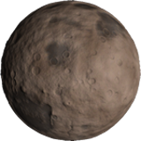

Moho
Moho is the third-smallest planet and the one closest to Kerbol, with an orbital period of 102 days-the shortest in the Kerbol system. It has an orbital velocity ranging from 12-18km/s, making it the fastest celestial body in Kerbal Space Program. It is the Mercury analogue. Moho lacks an atmosphere and natural satellites. The planet gets its name from the Mohorovičić discontinuity, the boundary between the Earth's crust and mantle.
In- Game Description:
Moho figures in Kerbal mythology as a fiery place with oceans of flowing lava. In reality however, it’s much less interesting. Scientists speculate about possible ways to make it “awesome like in the stories”. Some of those ideas have led to new breakthroughs in aerospace technology.
Home Page